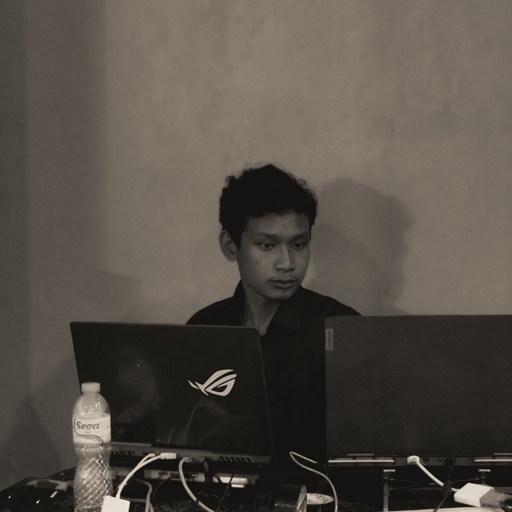

PROJECT
Beberapa Project yang telah saya buat



Hai! Saya Muhammad Asyqar Dahlan, seorang graphic designer yang selalu haus akan ilmu baru. Saya senang belajar tentang tren desain terbaru dan mengaplikasikannya dalam karya-karya saya. Saya percaya bahwa desain adalah sebuah perjalanan yang tidak pernah berakhir.
Dalam sebuah kehidupan memang ilmu adalah hal yang terpenting dalam hidup kita,dan inilah latar belakang pendidikan saya
Pengalaman dapat membuat saya mempelajari dan memahami sesuatu yang saya lakukan,ini adalah beberapa pengalaman yang pernah saya lakukan
Beberapa Project yang telah saya buat